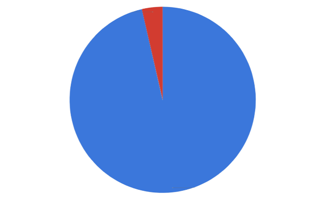

63,000
Minors incarcerated in the USA.Accoding to the Bureau of Justice Statistics, the number of minors incarcerated in adult prisons and jails in the USA has dropped from 10,420 minors in 2008, to 2,250 in 2021. [source]
The image above represents the ratio between minors held in adult prisons and jails, and juvenile detention centers.